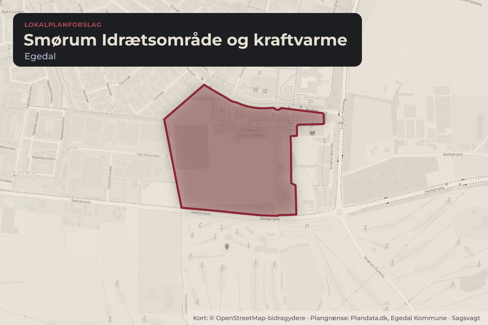
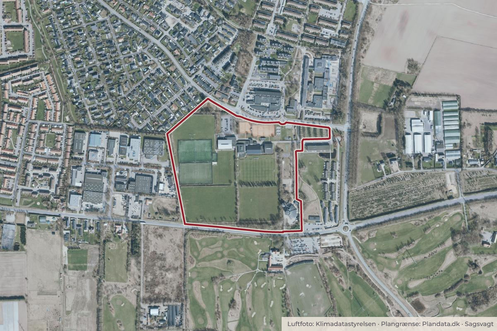

Besluttet 21. oktober, Økonomiudvalget, Egedal
Lokalplan 085 for Smørum Idrætsområde og kraftvarme - endelig vedtagelse - beslutning
Byggeri og lokalplanerKultur og fritid

Kort: © OpenStreetMap-bidragydere. Plangrænse: Plandata.dk, Egedal Kommune.

Kort fortalt
- Hvem
- Økonomiudvalget, Egedal Kommune
- Hvornår
- Onsdag 21. oktober 2026
- Status
- Besluttet. Birgitte Neergaard-Kofod (C), Karsten Søndergaard (V) og Anders Bo Larsen (V) fremsatte følgende ændringsforslag: P2 ændres fra permanent parkering til ikkeasfalteret event-parkering for at bevare det grønne islæt inkl. den nuværende beplantning. 4 stemte for, 3 imod.Beslutningen er forkortet her. Læs hele beslutningen
Er noget forkert her? Skriv til os
Vedtaget 4–3
- For 4
- Imod 3
- Undlod 0
For
- Vicky Holst Rasmussen (A)
- Rikke Mortensen (B)
- Jens Skov (F)
- Ulrik John
Imod
- Birgitte Neergaard-Kofod (C)
- Karsten Søndergaard (V)
- Anders Bo
Læs hele sagen Kommunens egen tekst
Indstilling
Administrationen indstiller, at:
1. Forslag til Lokalplan 085 vedtages endeligt med de ændringer, der fremgår af
sagsfremstillingen og bilagene.
2. Forslag til Kommuneplantillæg 04 vedtages endeligt med de ændringer, der
fremgår af sagsfremstillingen og bilagene.
3. Administrationen bemyndiges til at foretage redaktionelle rettelser.
Baggrund
Smørum Idrætsområde er et af kommunens centrale idræts-, kultur- og fritidsområder, og
formålet med lokalplanen er at skabe en robust og fleksibel planmæssig ramme for en
langsigtet udvikling af området som en ’Mangfoldig Magnet’. Lokalplanen udspringer af et stort
ønske om at muliggøre flere aktiviteter i området.
Smørum Kraftvarme har samtidig søgt om en lokalplan, der skal gøre det muligt at udvide og
fremtidssikre forsyningsanlægget, beliggende ved siden af idrætsanlægget ud mod
Skebjergvej.
Lokalplanforslaget lægger bl.a. op til følgende:
Udvidelse af eksisterende byggefelt til 2 nye haller på hhv. cirka 2000 og 4200 m2 ved
idrætsområdet
Hævet maksimal bebyggelsesprocent til 45 % og byggefelt udvides til opførelse af
lagerbygning og tank på op til 18,5 meter ved kraftvarme.
Fastholdelse og udvidelse af eksisterende parkeringsarealer og udlæg til nye
parkeringsarealer.
Fastholdelse af eksisterende beplantning, krav om genplantning samt krav om
afskærmende beplantning.
Fastholdelse af eksisterende stier og udlæg til ny stiforbindelse.
Mulighed for terrænarbejde ifm. nyt byggeri, tilskuertribune, støjvold m.m.
Idrætsområdet er i dag ejet af Egedal Kommune. Lokalplanen tager ikke stilling til ejerskabet af
kommende faciliteter i området. Hvis et kommende byggeri i området skal være privat, vil det
forudsætte salg af kommunens arealer.
Planforslagene blev godkendt på byrådsmødet den 29. april 2026 og var efterfølgende i
offentlig høring fra den 5. maj – 30. juni 2026. Der er ikke klaget over afgørelsen om ikke at
udarbejde en miljøvurdering. På den baggrund skal der tages stilling til, om planforslagene kan
vedtages endeligt.
Høringssvar
Der er kommet 15 høringssvar til planforslagene. Høringssvarene og administrationens
bemærkninger hertil kan ses i bilag 1 og 2.
Høringssvarene vedrører hovedsageligt følgende forhold:
Parkering til idrætsområdet, herunder forslag til alternative principper for parkering og
parkeringsudlæg.
Byggeret og størrelser på byggefelter, herunder ønske om at kunne bebygge mere,
både på idrætsområdet og kraftvarmeværkets areal.
Ønske om færre krav til arkitektur og materialer til nye idrætshaller.
Behov for egnet alternativ placering af petanquebaner og atletikundervisning.
Interne stisystemer og adgangsveje til idrætsområdet.
Administrationen vurderer, at bl.a. høringssvar giver anledning til enkelte ændringer og
præciseringer af lokalplanen og kommuneplantillægget, herunder primært:
Den maksimale bebyggelsesprocent for idrætsområdet hæves fra 10 til 15.
Krav om maksimalt to etager for byggeri i idrætsområdet bortfalder.
Parkeringsarealet, P-2, reduceres arealmæssigt, mens parkeringsarealet, P-3, udvides.
Krav om at trærækker mellem Flodvej og Kulturhuset ved P-2 skal fastholdes enten med
de eksisterende piletræer eller ved nyplantning af anden træart.
Mulighed for terrænregulering ifm. halbyggeri i Byggefelt 1 og ved etablering af tribuner
eller rekreative elementer af jord.
Mulighed for flytning af cykelsti langs tennisbanerne.
Mulighed for opsætning af lysmaster omkring baner.
Udvidelse af byggefelt 3 til Smørum Kraftvarme på ca. 500 m2.
Mindre tilretninger og præciseringer vedr. anvendelse, sekundær bebyggelse herunder
orangeri, målsatte recipienter og reklamering.
Parkering
I forbindelse med den politiske behandling af planforslaget var der dialog om de fremtidige
parkeringsforhold. På den baggrund og på baggrund af høringen, er der sket en række
ændringer i lokalplanen, som primært handler om at friholde flere grønne arealer og til i højere
grad at anvende eksisterende parkeringer tæt på lokalplanområdet samt udvide
parkeringsarealerne i randen af området.
Konkret betyder det, at parkeringsareal P-2 bliver reduceret, mens P-3 bliver udvidet.
Derudover er der foretaget en lille justering af udvidelsesmuligheder til det eksisterende
parkeringsareal, P-1. Desuden er det tilføjet i lokalplanen at idrætsområdets fastsatte
parkeringsnorm også kan opfyldes ved brug af parkeringspladser uden for lokalplanens
afgrænsning.
Samtidig stilles der krav om fastholdelse af trærækker ved P-2, enten ved bevaring af
eksisterende piletræer eller ved nyplantning af træer af anden art. På den måde sikres
områdets grønne præg i videst muligt omfang, mens p-udlægget fortsat understøtter, at der
sikres parkering i nær tilknytning til idrætsområdet og hallerne, hvilket øger tilgængeligheden
for områdets brugere.
Der er desuden åbnet mulighed for bygninger på op til 50 m2 til fællesskabsaktiviteter,
herunder fx orangeri, udenfor byggefelterne.
Lokalplan 085 og kommuneplantillæg 04 med indarbejdede ændringer kan ses i bilag 3 og 4.
Administrationen vurderer, at ændringerne er så begrænsede, at der ikke er krav om en
supplerende høring.
Vurdering ift. bæredygtighed og kvalitet i byudviklingen
Set ift. Byrådets principper om kvalitet og bæredygtighed i byudviklingen vurderer
administrationen samlet, at planforslagene, inklusive de foreslåede ændringer, opfylder
Byrådets ønske om at muliggøre udviklingen af et grønt, attraktivt område, herunder med krav
om bæredygtighedstiltag på tage af ny bebyggelse.
Klimakonsekvensvurdering:
Administrationen vurderer, at:
Lokalplanen muliggør anlægsarbejde og nybyggeri i form af en udvidelse af Smørum
Kraftvarme, nye idrætshaller og tilhørende parkeringsanlæg, hvilket medfører øget CO2belastning.
Lokalplanen muliggør, at overskudsjord fra bygge- og anlægsarbejder kan genanvendes
til terrænreguleringer i området. Dette forventes at medføre en besparelse på CO2udslip i forhold til bortkørsel af jord.
Konsekvenser for budgettet
Sagen har ingen bevillingsmæssige konsekvenser.
Borgerdialog
Der har i høringsperioden været afholdt borgermøde om planforslagene med deltagelse af ca.
25 borgere. Bemærkninger fra borgermødet er indgået i forslag til tilretning af planforslagene,
og kan ses i bilag 2.
Behandling i Plan- og Byudviklingsudvalget 6. oktober 2026
Ulrik John Nielsen (L), Jonathan Kristensen (F), Janus Veje (L) og Vicky Holst
Rasmussen (A) stillede følgende ændringsforslag til indstillingens punkt 1:
”Parkeringsareal P2 skal udgå af lokalplanen, både i redegørelse, bestemmelser og
kortbilag.”
Der blev stemt om ændringsforslaget.
For stemte: Ulrik John Nielsen (L), Jonathan Kristensen (F), Janus Veje (L) og Vicky
Holst Rasmussen (A) med i alt 4 stemmer.
Imod stemte: Allan Bøwig (O) og Lars Winther (I) med i alt 2 stemmer.
Ændringsforslaget vedtaget.
Allan Bøwig (O) og Lars Winther (I) ønskede følgende mindretalsudtalelse: Vi ønsker ikke
P2 fjernet uden anvisning af anden parkeringsmulighed.
Udvalget besluttede følgende formulering af lokalplanens § 7, stk. 9: I Delområde A kan
der, uden for de angivne byggefelter, etableres mindre skure eller pavillonbebyggelser og
lignende til fællesaktiviteter, eller som er nødvendige for områdets drift og anvendelse, på
maksimalt 50 m² pr. bygning samt én enkelt sekundær bebyggelse på maksimalt 100 m².
Disse skal kunne holdes inden for den fastlagte bebyggelsesprocent for det enkelte
jordstykke.
Indstillingens punkt 2 og 3 anbefalet.
Anders Bo Larsen (V) var fraværende.
Beslutning
Birgitte Neergaard-Kofod (C), Karsten Søndergaard (V) og Anders Bo Larsen (V)
fremsatte følgende ændringsforslag: P2 ændres fra permanent parkering til ikkeasfalteret event-parkering for at bevare det grønne islæt inkl. den nuværende
beplantning.
Vicky Holst Rasmussen (A), Rikke Mortensen (B), Jens Skov (F), Ulrik John Nielsen (L),
Edith Thingstrup (I) og Johan Hahn (E) fremsatte følgende ændringsforslag: Sagen
sendes tilbage til administrationen med henblik på en sag, der indeholder det afklarende
materiale, som er blevet fremsendt siden PBU´s behandling.
Der blev stemt om ændringsforslaget om at sende sagen tilbage til administrationen.
For stemte: Vicky Holst Rasmussen (A), Rikke Mortensen (B), Jens Skov (F), Ulrik John
Nielsen (L), Edith Thingstrup (I) og Johan Hahn (E) med i alt 6 stemmer.
Imod stemte: Birgitte Neergaard-Kofod (C), Karsten Søndergaard (V) og Anders Bo
Larsen (V) med i alt 3 stemmer.
Sagen blev sendt tilbage til administrationen.
Birgitte Neergaard-Kofod (C), Karsten Søndergaard (V) og Anders Bo Larsen (V)
ønskede følgende mindretalsudtalelse: Vi ønsker P2 ændres fra permanent parkering til
ikke-asfalteret event-parkering for at bevare det grønne islæt inkl. den nuværende
beplantning.
Kilde: Egedal Kommune, Økonomiudvalget, referat fra mødet onsdag 21. oktober 2026, punkt 8. Læs den originale sag hos kommunen.